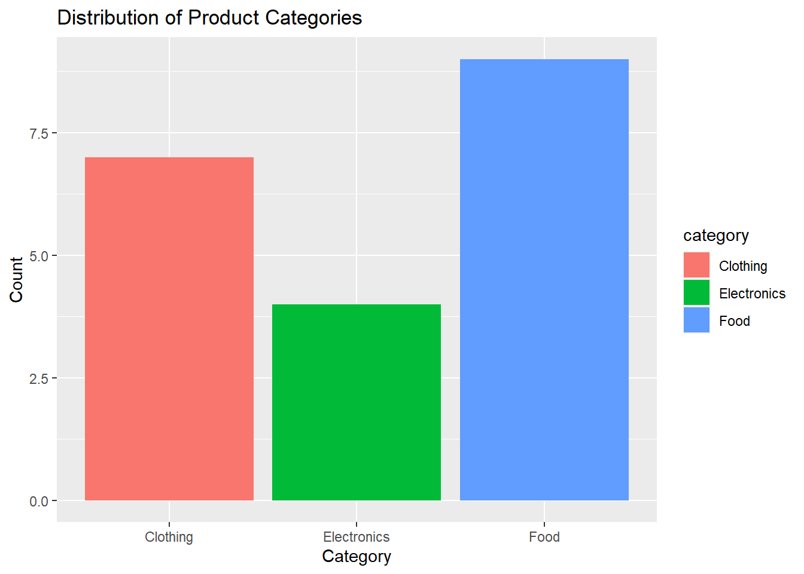

Cracking the Code of Categorical Data: A Guide to Factors in R
R Programming
data types
factor
categorical data
Author
M. Fatih Tüzen
Published
January 11, 2024
Modified
January 11, 2024
Introduction
https://allisonhorst.com/everything-else
R programming is a versatile language known for its powerful statistical and data manipulation capabilities. One often-overlooked feature that plays a crucial role in organizing and analyzing data is the use of factors. In this blog post, we’ll delve into the world of factors, exploring what they are, why they are important, and how they can be effectively utilized in R programming.
Creation of Factors
Creating factors in R involves converting categorical data into a specific data type that represents distinct levels. The most common method involves using the factor() function.
# Creating a factor from a character vectorgender_vector <-c(rep("Male",5),rep("Female",7))gender_factor <-factor(gender_vector)# Displaying the factorprint(gender_factor)
[1] Male Male Male Male Male Female Female Female Female Female
[11] Female Female
Levels: Female Male
You can explicitly specify the levels when creating a factor.
# Creating a factor with specified levelseducation_vector <-c("High School", "Bachelor's", "Master's", "PhD")education_factor <-factor(education_vector, levels =c("High School", "Bachelor's", "Master's", "PhD"))# Displaying the factorprint(education_factor)
[1] High School Bachelor's Master's PhD
Levels: High School Bachelor's Master's PhD
For ordinal data, factors can be ordered.
# Creating an ordered factorrating_vector <-c(rep("Low",4),rep("Medium",5),rep("High",2))rating_factor <-factor(rating_vector, ordered =TRUE, levels =c("Low", "Medium", "High"))# Displaying the ordered factorprint(rating_factor)
[1] Low Low Low Low Medium Medium Medium Medium Medium High
[11] High
Levels: Low < Medium < High
You can change the order of levels. ordered=TRUE indicates that the levels are ordered.
[1] Low Low Low Low Medium Medium Medium Medium Medium High
[11] High
Levels: High < Medium < Low
Tip
You can also use gl() function in order to generate factors by specifying the pattern of their levels.
Syntax:
gl(n, k, length, labels, ordered)
Parameters:
n: Number of levels
k: Number of replications
length: Length of result
labels: Labels for the vector(optional)
ordered: Boolean value to order the levels
new_factor <-gl(n =3, k =4, labels =c("level1", "level2","level3"),ordered =TRUE)print(new_factor)
In R, a factor is a data type used to categorize and store data. Essentially, it represents a categorical variable and is particularly useful when dealing with variables that have a fixed number of unique values. Factors can be thought of as a way to represent and work with categorical data efficiently.
Factors in R programming are not merely a data type; they are a powerful tool for elevating the efficiency and interpretability of your code. Whether you are analyzing survey responses, evaluating educational levels, or visualizing temperature categories, factors bring a level of organization and clarity that is indispensable in the data analysis landscape. By embracing factors, you unlock a sophisticated approach to handling categorical data, enabling you to extract deeper insights from your datasets and empowering your R code with a robust foundation for statistical analyses.
Factors are employed in various scenarios, from handling categorical data, statistical modeling, memory efficiency, maintaining data integrity, creating visualizations, to simplifying data manipulation tasks in R programming.
Categorical Data Representation
Factors allow you to efficiently represent categorical data in R. Categorical variables, such as gender, education level, or geographic region, are common in many datasets. Factors provide a structured way to handle and analyze these categories. Converting this into a factor not only groups these levels but also standardizes their representation across the dataset, allowing for consistent analysis.
# Sample data as a vectorgender <-c("Male", "Female", "Male", "Male", "Female")# Converting to factorgender_factor <-factor(gender)# Checking levelslevels(gender_factor)
[1] "Female" "Male"
# Checking unique values within the factorunique(gender_factor)
[1] Male Female
Levels: Female Male
Statistical Analysis and Modeling
Statistical models often require categorical variables to be converted into factors. When performing regression analysis or any statistical modeling in R, factors ensure that categorical variables are correctly interpreted, allowing models to account for categorical variations in the data.
Let’s examine the example to include two factor variables and showcase their roles in a statistical model. We’ll consider the scenario of exploring the impact of both income levels and education levels on spending behavior.
# Simulated data for spending behaviorn <-100spending <-runif(n, min =100, max =600)income_levels <-sample(c("Low", "High", "Medium"), size = n, replace =TRUE)education_levels <-sample(c("High School", "Graduate", "Undergraduate"), size = n, replace =TRUE)# Creating factor variables for income and educationincome_factor <-factor(income_levels)education_factor <-factor(education_levels)# Linear model with both income and education as factor variablesmodel <-lm(spending ~ income_factor + education_factor)summary(model)
Call:
lm(formula = spending ~ income_factor + education_factor)
Residuals:
Min 1Q Median 3Q Max
-241.590 -124.443 -4.319 122.152 236.438
Coefficients:
Estimate Std. Error t value Pr(>|t|)
(Intercept) 326.644 31.092 10.506 <2e-16 ***
income_factorLow 11.647 39.006 0.299 0.766
income_factorMedium 25.897 33.367 0.776 0.440
education_factorHigh School 29.050 36.983 0.785 0.434
education_factorUndergraduate 7.322 34.206 0.214 0.831
---
Signif. codes: 0 '***' 0.001 '**' 0.01 '*' 0.05 '.' 0.1 ' ' 1
Residual standard error: 146.1 on 95 degrees of freedom
Multiple R-squared: 0.01289, Adjusted R-squared: -0.02868
F-statistic: 0.31 on 4 and 95 DF, p-value: 0.8706
The output summary of the model will now provide information about the impact of both income levels and education levels on spending:
Coefficients: Each factor level within income_factor and education_factor will have its own coefficient, indicating its estimated impact on spending.
Interactions: If there is an interaction term (which we don’t have in this simplified example), it would represent the combined effect of both factors on the response variable.
The summary output will provide a comprehensive view of how different combinations of income and education levels influence spending behavior. This type of model allows for a more nuanced understanding of the relationships between multiple categorical variables and a continuous response variable.
Efficiency in Memory and Performance
Factors in R are implemented as integers that point to a levels attribute, which contains unique values within the categorical variable. This representation can save memory compared to storing string labels for each observation. It also speeds up some operations as integers are more efficiently handled in computations.
# Creating a large dataset with a categorical variablelarge_data <-sample(c("A", "B", "C", "D"), 10^6, replace =TRUE)# Memory usage comparisonobject.size(large_data) # Memory usage without factor
8000272 bytes
large_data_factor <-factor(large_data)object.size(large_data_factor) # Memory usage with factor
4000688 bytes
In this example:
We generate a large dataset (large_data) with a categorical variable.
We compare the memory usage between the original character vector and the factor representation.
When you run the code, you’ll observe that the memory usage of the factor representation is significantly smaller than that of the character vector. This highlights the memory efficiency gained by representing categorical variables as factors.
The compact integer representation not only saves memory but also accelerates various operations involving categorical variables. This is particularly advantageous when working with extensive datasets or when dealing with resource constraints.
Efficient memory usage becomes critical in scenarios where datasets are substantial, such as in big data analytics or machine learning tasks. By leveraging factors, R programmers can ensure that their code runs smoothly and effectively, even when dealing with large and complex datasets.
Data Integrity and Consistency
Factors enforce the integrity of categorical data. They ensure that only predefined levels are used within a variable, preventing the introduction of new, unforeseen categories. This maintains consistency and prevents errors in analysis or modeling caused by unexpected categories.
One of the key features of factors is their ability to explicitly define and enforce levels within a categorical variable. This ensures that the data conforms to a consistent set of categories, providing a robust framework for analysis.
Consider a scenario where we have a factor representing temperature categories: ‘Low’, ‘Medium’, and ‘High’. Let’s explore how factors help maintain consistency:
# Creating a factor with specified levelstemperature <-c("Low", "Medium", "High", "Low", "Extreme")# Defining specific levelstemperature_factor <-factor(temperature, levels =c("Low", "Medium", "High"))# Replacing with an undefined level will generate a warningtemperature_factor[5] <-"Extreme High"
Warning in `[<-.factor`(`*tmp*`, 5, value = "Extreme High"): invalid factor
level, NA generated
In this example:
We create a factor representing temperature categories.
We explicitly define specific levels using the levels parameter.
An attempt to introduce a new, undefined level (‘Extreme High’) generates a warning.
When you run the code, you’ll observe that attempting to replace a level with an undefined value triggers a warning. This emphasizes the role of factors in preserving data integrity and consistency. Any attempt to introduce new or undefined categories is flagged, preventing unintended changes to the data.
In real-world scenarios, maintaining data integrity is crucial for accurate analyses and meaningful interpretations. Factors provide a safeguard against inadvertent errors, ensuring that the categorical data remains consistent throughout the analysis process. This is particularly important in collaborative projects or situations where data is sourced from multiple channels.
Graphical Representations and Visualizations
Factors in R contribute significantly to the creation of clear and insightful visualizations. By ensuring proper ordering and labeling of categorical data, factors play a pivotal role in generating meaningful graphs and charts that enhance data interpretation.
When creating visual representations of data, such as bar plots or pie charts, factors provide a structured foundation. They ensure that the categories are appropriately arranged and labeled, allowing for accurate communication of insights.
Let’s create a simple bar plot using the ggplot2 library, showcasing the distribution of product categories:
library(ggplot2)# Sample data: product categoriescategories <-sample(c("Electronics", "Clothing", "Food"),size =20 ,replace =TRUE)category_factor <-factor(categories)# Creating a bar plot with factors using ggplot2library(ggplot2)# Creating a data frame for ggplotdata <-data.frame(category = category_factor)# Creating a bar plotggplot(data, aes(x = category, fill = category)) +geom_bar() +labs(title ="Distribution of Product Categories", x ="Category", y ="Count")

Conclusion
In the intricate world of data analysis, where insights hide within categorical nuances, factors in R emerge as indispensable guides, offering a pathway to crack the code of categorical data. Through the exploration of their multifaceted roles, we’ve uncovered how factors bring structure, efficiency, and integrity to the table.
Factors, as revealed in our journey, stand as the bedrock for efficient data representation and manipulation. They unlock the power of statistical modeling, enabling us to dissect the impact of categorical variables on outcomes with precision. Memory efficiency becomes a notable ally, especially in the face of colossal datasets, where factors shine by optimizing computational performance.
Maintaining data integrity is a critical aspect of any analytical endeavor, and factors act as vigilant guardians, ensuring that categorical variables adhere to predefined levels. The blog post showcased how factors not only prevent unintended changes but also serve as sentinels against the introduction of undefined categories.
The journey through the visualization realm illustrated that factors are not just behind-the-scenes players; they are conductors orchestrating visually compelling narratives. By ensuring proper ordering and labeling, factors elevate the impact of graphical representations, making categorical data come alive in meaningful visual stories.
As we conclude our guide to factors in R, we find ourselves equipped with a toolkit to navigate the categorical maze. Whether you’re a seasoned data scientist or an aspiring analyst, embracing factors unlocks a deeper understanding of your data, paving the way for more accurate analyses, clearer visualizations, and robust statistical models.
Cracking the code of categorical data is not merely a technical feat—it’s an art. Factors, in their simplicity and versatility, empower us to decode the richness embedded in categorical variables, turning what might seem like a labyrinth into a comprehensible landscape of insights. So, let the journey with factors in R be your compass, guiding you through the intricate tapestry of categorical data analysis. Happy coding!